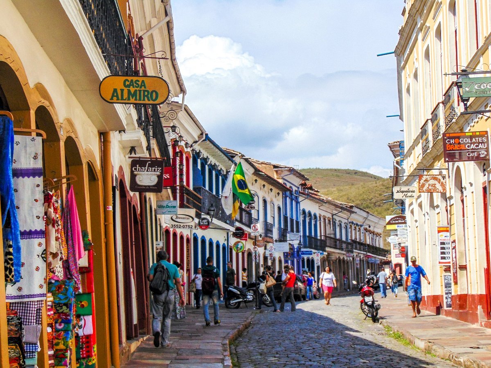

Ouro Preto, MG – A Joia do Barroco e Patrimônio da Humanidade
Situada entre as montanhas de Minas Gerais, Ouro Preto é uma das cidades históricas mais impressionantes do Brasil. Fundada no final do século XVII, a antiga Vila Rica foi o epicentro da Corrida do Ouro e desempenhou um papel fundamental na história do país. Hoje, é um verdadeiro museu a céu aberto, com suas ruas de pedra, casarões coloniais e igrejas ricamente decoradas que encantam visitantes do mundo inteiro. Reconhecida como Patrimônio Cultural da Humanidade pela UNESCO, Ouro Preto preserva com orgulho sua arquitetura barroca, sua cultura vibrante e seu passado grandioso.
Entre seus maiores tesouros estão as igrejas históricas, verdadeiras obras-primas do barroco mineiro. A Igreja de São Francisco de Assis, projetada por Aleijadinho e com pinturas de Mestre Ataíde, é um dos mais belos exemplos desse estilo artístico. A Matriz de Nossa Senhora do Pilar impressiona pela riqueza de seus altares dourados, enquanto a Igreja de Nossa Senhora do Carmo se destaca por sua elegante arquitetura. Cada construção carrega histórias fascinantes, refletindo a devoção e o esplendor do período colonial.
Além da arte e da arquitetura, Ouro Preto oferece experiências culturais e naturais únicas. A cidade abriga museus importantes, como o Museu da Inconfidência, que retrata a luta dos inconfidentes pela independência do Brasil, e o Museu de Ciência e Técnica, instalado na antiga Escola de Minas. Suas ladeiras históricas levam a praças charmosas, feiras de artesanato e minas de ouro abertas à visitação, como a Mina da Passagem, onde é possível conhecer de perto a vida dos antigos mineradores. Já para os amantes da natureza, a região oferece trilhas e cachoeiras deslumbrantes, como a Cachoeira das Andorinhas e o Parque Estadual do Itacolomi.
Com sua atmosfera única, Ouro Preto proporciona uma viagem no tempo, levando seus visitantes a uma era de ouro, arte e revoluções. Seja admirando suas igrejas magníficas, explorando sua história ou simplesmente contemplando suas paisagens montanhosas, a cidade continua sendo um dos destinos mais fascinantes de Minas Gerais e do Brasil.
